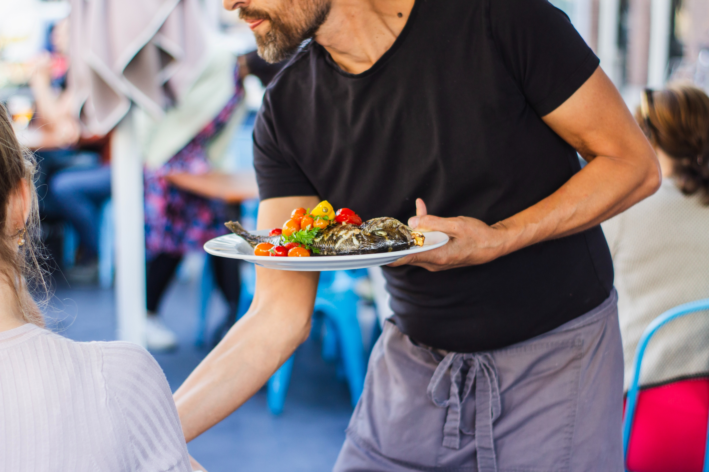

1. 이탈리안 레스토랑 홀서빙 알바

| 기간 |
1개월 |
| 상세업무 |
이탈리안 레스토랑에서 손님 응대, 주문받기, 주방에 안내하기 |
일한 후기
웃으면서 손님을 대하는 것이 너무 어려웠던 대학교 시절.. 그런데 그것보다
더 힘들었던 건 다른 직원과 비교하며 나를 괴롭혔던 사장마누라..ㅠㅠ 결국
밉보이고 1개월만에 잘려버림ㅋㅋㅋㅋㅋㅋㅋㅋㅋ그 땐 왜그렇게 숫기가 없고
부끄러웠는지 참.. 너무 서러워서 울면서 집에 감ㅋㅋㅋㅋㅋㅋ
얻은거 & 배운거
나는 이것밖에 못하나라는 자괴감이 들었는데 지금 생각해보니 딱히 얻은거
없음.